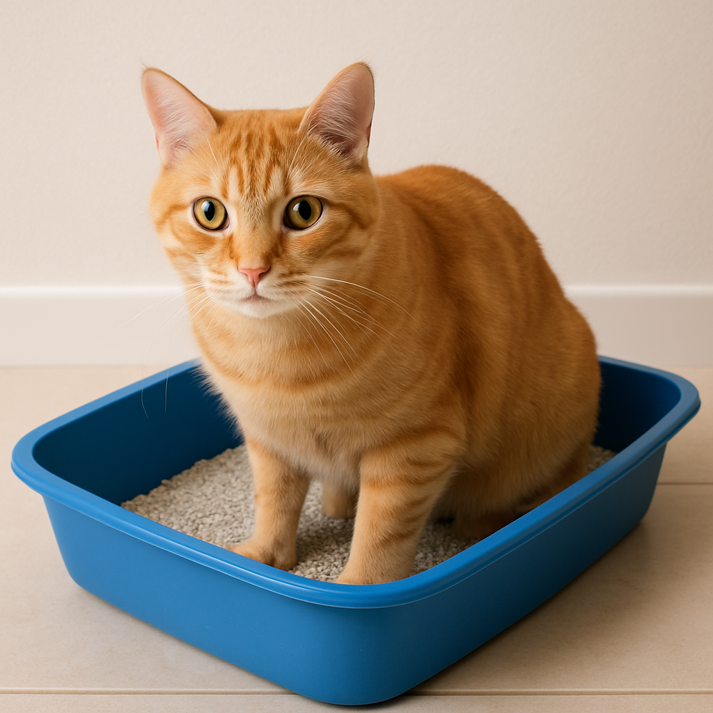

Caixa de Areia para Gatos: Guia Completo para Escolher e Manter

Por Plantas & Gatos - Seu guia de confiança sobre cuidados e comportamento felino
Quando o assunto é bem-estar felino, a caixa de areia ocupa um lugar central na vida dos gatos domésticos. Ela não é apenas um espaço para as necessidades fisiológicas: é também um reflexo de conforto, higiene e até mesmo um indicador da saúde mental e física do animal. Escolher e cuidar adequadamente da caixa pode prevenir problemas comportamentais sérios, eliminar odores desagradáveis e detectar precocemente sinais de doenças.
🐾 Por que a Caixa de Areia é Fundamental
Os gatos são animais naturalmente limpos, com instintos ancestrais que os levam a enterrar seus dejetos para evitar a detecção por predadores. Uma caixa inadequada pode causar estresse crônico, levando a problemas como:
- Eliminação inadequada (urinar ou defecar fora da caixa)
- Retenção urinária, que pode evoluir para obstrução uretral
- Comportamentos de marcação territorial
- Ansiedade e depressão felina
📦 Tipos de Caixas de Areia: Análise Detalhada
Caixas Abertas (Convencionais)
Vantagens: Ventilação natural, fácil acesso visual, baixo custo, fácil limpeza
Desvantagens: Maior espalhamento de areia, odores menos contidos
Ideal para: Gatos jovens, idosos ou claustrofóbicos
Caixas Cobertas (com Tampa)
Vantagens: Contêm odores e areia, oferecem privacidade
Desvantagens: Concentram odores, podem dar sensação de confinamento
Ideal para: Ambientes pequenos e gatos que gostam de privacidade
Caixas Autolimpantes
Vantagens: Automação da limpeza, sempre higienizadas
Desvantagens: Alto custo, ruído do motor, dependência elétrica
Ideal para: Rotinas intensas, múltiplos gatos
Caixas com Borda Alta
Vantagens: Contêm melhor a areia, boas para gatos que cavam
Desvantagens: Difícil acesso para gatos idosos
Ideal para: Gatos ativos e jovens
📏 Dimensionamento Correto
A caixa deve ter 1,5 vez o comprimento do gato. Caixas pequenas aumentam em 40% a chance de eliminação inadequada.
- Gato pequeno (2-4kg): 45x35cm
- Gato médio (4-6kg): 55x40cm
- Gato grande (6-8kg): 65x45cm
🏠 Quantidade de Caixas: Estratégia Territorial
A regra de ouro "n+1" (número de gatos + 1) reduz conflitos e estresse. Distribua as caixas por andares e cômodos diferentes.
📍 Localização Estratégica
- Ambientes tranquilos e ventilados
- Longe de comida, água e eletrodomésticos barulhentos
- Sempre acessível 24h por dia
🧹 Manutenção e Higiene
Rotina diária: remover fezes e torrões, manter 5-7cm de areia, observar o gato.
Rotina semanal: troca total, lavagem com sabão neutro, secagem completa.
Produtos seguros: sabão neutro, bicarbonato, vinagre diluído.
⛏️ Tipos de Areia
- Aglomerante (bentonita): prática, forma torrões, mas gera poeira.
- Não aglomerante: barata, precisa de trocas frequentes.
- Sílica: controle superior de odor, custo elevado.
- Biodegradáveis: sustentáveis e compostáveis.
🚨 Indicadores de Saúde
Fique atento a sinais como urina com sangue, fezes alteradas, dor ou recusa da caixa. Ausência de micção por mais de 12h exige atendimento veterinário imediato.
⚠️ Problemas Comuns
Eliminação fora da caixa: pode indicar sujeira, estresse ou doença.
Rejeição à areia nova: faça transição gradual em até 14 dias.
Odores persistentes: aumente a frequência de limpeza e ventile o ambiente.
👶🐱 Considerações por Faixa Etária
- Filhotes: caixas baixas e areia não aglomerante.
- Adultos: recomendações padrão.
- Idosos: bordas baixas e caixas extras.
🌍 Sustentabilidade
Prefira areias biodegradáveis quando possível. Nunca descarte no vaso sanitário. Compostagem é viável apenas para urina em substratos biodegradáveis.
✅ Checklist do Tutor Consciente
- Caixa adequada (tamanho, número e localização)
- Areia correta para o perfil do gato
- Limpeza diária e semanal
- Observação constante da saúde do felino
Uma caixa de areia bem escolhida e cuidada é um investimento fundamental para a saúde e felicidade do seu gato — e para a harmonia da casa. 🐾
← Voltar para o blog